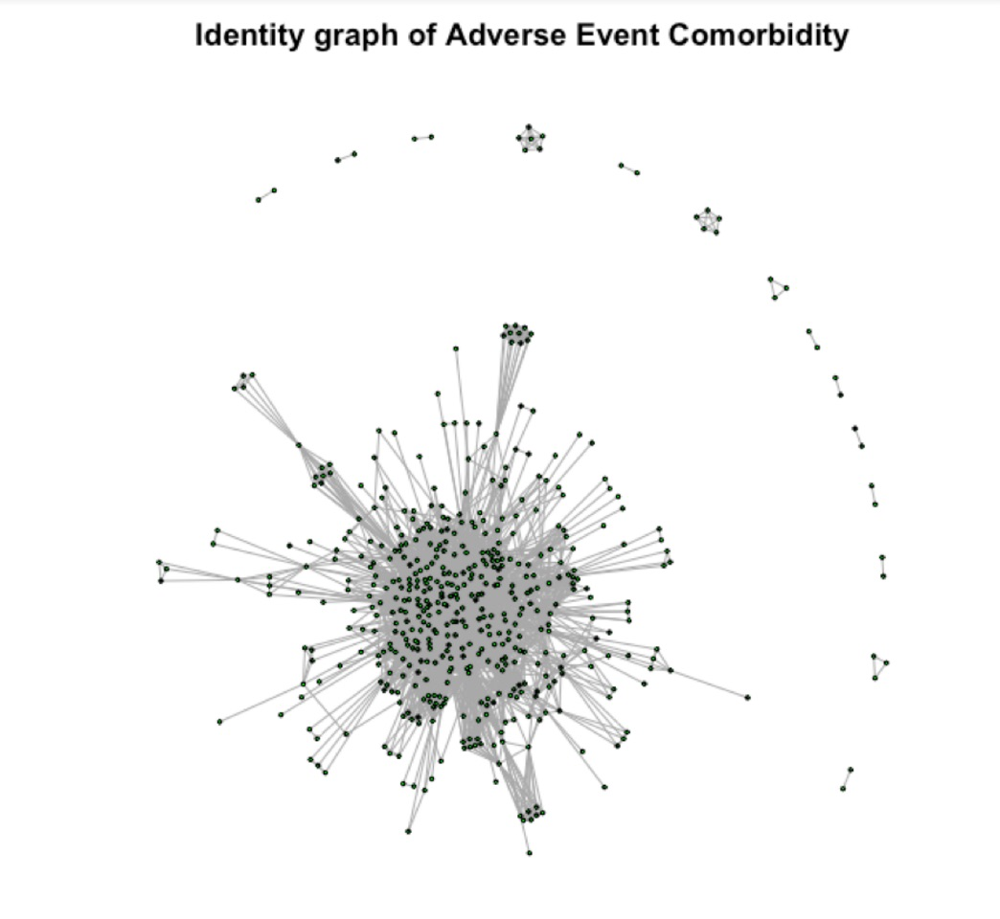

The co-occurrence patterns of Adverse events, particularly under co-administration of multiple drugs is poorly understood. We wanted to investigate if we could use social networking algorithms to provide an insight into the relationship of these events.
Initially we hoped to use the tweet data from previous sections for this analysis. However we simply did not have enough data points available. Thankfully, the FDA provides quarterly downloadable files of Adverse Events here. So we decided to use this as our data source, and to concentrate on suspected AEs related to the CNS stimulant, Vyvanse.
We created a graph object, where the nodes of the graph were Adverse Events, and the edges denoted a co-occurrence of two Adverse Events. The weights of the edges is the probability of that edge (1/number of edges) for that patient.
We can see from our preliminary plot that we have one large cluster of AEs, and a few very small clusters as well as a few isolates that consist of only one edge.
By isolating the smaller clusters, we can start seeing some interesting groupings. In the clusters above, we can see they have separated into maternal and feotal adverse events.
The linked AEs of Rhesus incompatibility and infusion is likely due to an infusion during delivery.
Having explored the smaller cluster, we are still left with a strongly connected, large cluster. In order to help visualise it, we will split the cluster into communities using a random walk.
In the above graphs, the size of the node represents the frequency of that AE and the edge weight is given by the sum of probabilities of the co-occurrence of the two connected AEs.
For example, we can see that a decreased appetite and somnolence are quite common on vyvanse and having a decreased appetite if you have somnolence is more likely than experiencing feeling jittery.
The downside of this type of analysis, where we are only looking at co-occurrence is that we can’t tell the direction of action. That is, we can see that somnolence is linked with feeling jittery, but we don’t have evidence of a causal link (even though it’s probably unlikely that feeling jittery would cause you to feel tired).